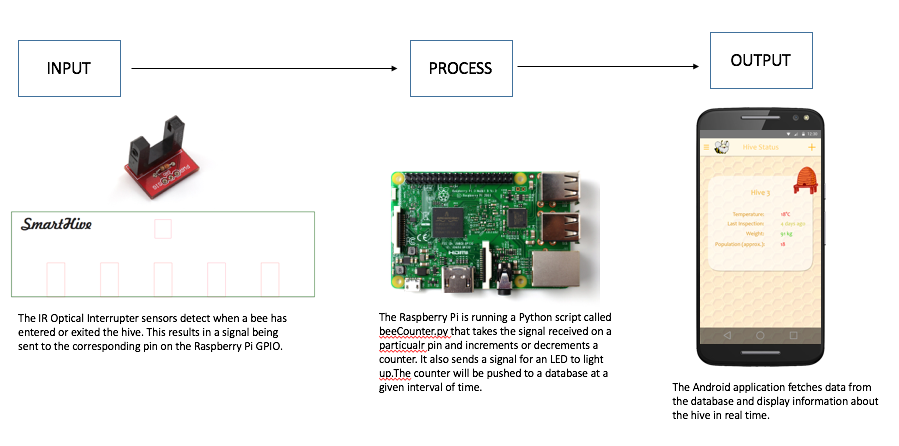
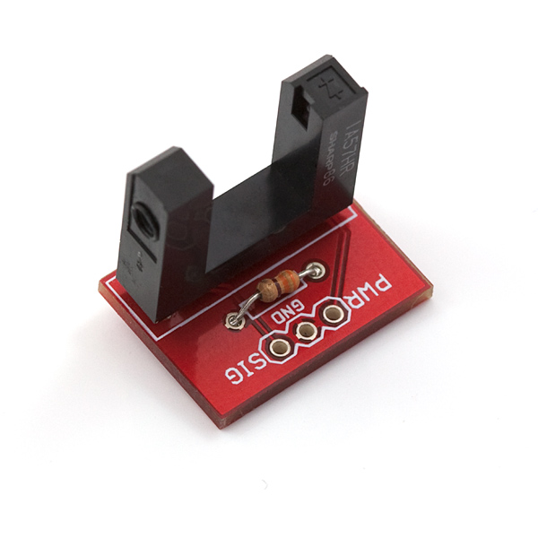
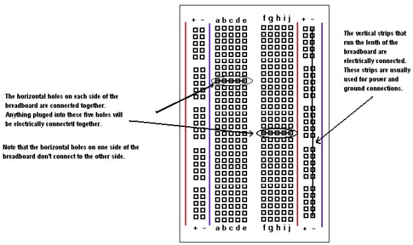

Introduction and System Diagram
Introduction
The purpose of the Bee Tracker project is to keep an accurate count of the number of bees in the hive at any time. This is done by IR Optical Interrupter modules that are mounted on either side of an acrylic gate at various entrance holes that is mounted in front of the entrance to the bee hive. This way, any time a bee enters or leaves the hive, it will be recorded. This is done by mounting the sensors on either side of the gate and checking if the first sensor detects an interruption followed by the second. This would indicate an entry and a counter would be incremented. If the sensors detected an interruption in the opposite order, this would indicate an exit and decrement the counter.
System Diagram

Figure 1: The system diagram showing the interaction of the inputs, processes, and outputs that will be integrated over the next semester.
Bill of Materials/Budget
| Item |
Quantity |
Cost (after tax) |
| Infrared Optical Interrupter Module (GP1A57HRJ00F) |
10 |
$80.80 |
| Raspberry Pi Model B Complete Starter Kit – 32 GB Edition |
1 |
$112.99 |
| Full Size Breadboard |
1 |
$8.81 |
| Full Size Breadboard |
1 |
$8.81 |
| LEDs |
1 |
$0.28 |
| Electrical Tape |
1 roll |
$1.70 |
| 50 Ohm Resistor |
1 |
$0.28 |
| 6” M-F Jumper Cables |
40 |
$13.47 |
| 12” M-F Jumper Cables |
30 |
$15.19 |
| Acrylic Sheet (0.08-in x 8-in x 10-in) |
1 |
$3.79 |
|
Total: |
$237.31 |
Table 1: The expected cost of building the project.
Click on the link to download the final detailed Budget.
Time Commitment
This is a general guideline of how long it should take to go from ordering the components to having a finished, working product. The idea is that anyone should be able to follow these build instructions and be able to finish the project in the indicated time as no research has to be done, rather it has all been done by me through this project.
| To Do |
Time Required |
| Ordering of parts/components |
1 business day (All components can be ordered through Creatron Inc. online, which offers 1 business day shipping in Toronto) |
| Cutting the acrylic hive entrance |
10 minutes |
| Attaching the IR Optical Interrupter Sensors to the acrylic hive entrance |
30 minutes |
| Wiring the sensors to the breadboard and to the Raspberry Pi |
1 hour |
| Setting up the Raspberry Pi and Importing the beeCounter.py code |
15 minutes |
| Running the code with the hardware connected |
5 minutes |
| Unit testing if you do not get the expected output |
Unknown |
| Total Time Commitment: |
~ 2 Days |
Table2: Amount of time expected to assemble and test the project.
Here is a link to the original schedule to complete the project.
Mechanical Assembly
Build Steps:
- Use the template at pwestman.github.io under Week 14 to laser cut the gate from the sheet of acrylic.

Figure 2: Front of the Hive. Click to download the template.

Figure 3: Sides of the hive to hold up the front piece for testing. Click to download the template.
- Attach the IR Optical Interrupter Modules on either side of each of the 5 holes on your piece of cut acrylic using the electrical tape (These can also be glued, however, I used electrical tape for a less permanent solution in order to use the sensors again once I collaborate with my other group members on the final project).

Figure 4: The GP1A57HRJ00F IR Optical Interrupter Sensor
- Run a jumper wire from pin number 2 (5V) of the Raspberry Pi to the positive connected bus on one side of the breadboard.
- Run another jumper wire from pin 3 (Ground) to the negative connected bus on the other side of the breadboard.

Figure 5: A breadboard showing the hole connections (Source: http://dm.risd.edu/pbadger/PhysComp/index.php?n=Devices.Breadboard)
- Connect the power pin on each of the IR sensors to the 5V connected bus on the breadboard.
- Connect the ground pin on each of the IR sensors to the Ground connected bus on the breadboard.
- Now for each IR sensor, connect the pin labelled “Signal” to a separate group of 5 connected pin hole. Ensure that each signal pin is in its own group of 5 horizontally connected pin hole.
- Follow the chart below to connect the GPIO pins on the Raspberry Pi header to the appropriate group of 5 signal bus.
When looking at the acrylic entrance from the front, from left to right:
| Sensor |
Raspberry Pi GPIO Pin |
| 1st Sensor - Front |
16 |
| 1st Sensor - Back |
18 |
| 2nd Sensor – Front |
11 |
| 2nd Sensor - Back |
13 |
| 3rd Sensor – Front |
12 |
| 3rd Sensor – Back |
15 |
| 4th Sensor – Front |
29 |
| 4th Sensor – Back |
31 |
| 5th Sensor – Front |
33 |
| 5th Sensor - Back |
35 |
Table 3: Mapping the pins from the sensors to the Raspberry Pi.
Ensure that each signal pin from the sensor is plugged in to the same group of 5 connected bus as the corresponding pin on the Raspberry Pi GPIO pins.
- Connect the LED to an arbitrary pin hole in the breadboard. Ensure the LED pins are not in the same group of 5 connected bus. Connect a jumper wire from pin 22 on the Raspberry Pi GPIO pins to the same group of 5 connected bus as the long end of the LED.
- Connect a 50 Ohm resistor to the same group of 5 connected bus as the short end of the LED.
- Connect a jumper wire from the same group of 5 connected bus as the resistor to the ground connected bus on the breadboard.
Complete Build Video
Build Video - Bee Tracker from Paul Westman on Vimeo.
PCB/Soldering
This project did not use a PCB, however, a PCB could be used for the LED indicator if you wish to do so.
Power Up
Now that your mechanical assembly is complete, turn on the Raspberry Pi. Create a new file called beeCounter.py and copy and paste the code from the link to the file. In the command line type ./sudo idle and run the Python code. The program should begin to run, but you will not see any output until you pass an object through one of the gates. This will increment the counter on the terminal as well as light up the LED on the breadboard.
Unit Testing
Since this project provides complete build instructions, unit testing should not be required because I have done the unit testing to get the project to work. However, if you encounter any problems in the mechanical assembly, unit testing may be helpful. Here is some of the unit testing I did on the project:
Testing one sensor:
GPIO.setmode(GPIO.BOARD)
GPIO.setup(22,GPIO.OUT)
GPIO.setup(16,GPIO.IN)
count=0
gate1=1
try:
while True:
if GPIO.input(16)==0:
if gate1==1:
count+=1
GPIO.output(22,True)
time.sleep(0.2)
GPIO.output(22,False)
print count
gate1=0
You can replace the GPIO.setup and GPIO.input functions with any pin you wish to test. This will test if that one particular pin is working.
Testing both sensors at one gate:
To test the pair of sensors on either side of the gate, run the following code:
import RPi.GPIO as GPIO
import time
GPIO.setmode(GPIO.BOARD)
GPIO.setup(22,GPIO.OUT)
GPIO.setup(16,GPIO.IN)
count=0
gate1=1
try:
while True:
if GPIO.input(16)==0:
if GPIO.input(18)==0:
if gate1==1:
count+=1
GPIO.output(22,True)
time.sleep(0.2)
GPIO.output(22,False)
print count
gate1=0
elif GPIO.input(18)==0:
if GPIO.input(16)==0:
if gate1==1:
count-=1
GPIO.output(22,True)
time.sleep(0.1)
GPIO.output(22,False)
time.sleep(0.1)
GPIO.output(22,True)
time.sleep(0.1)
GPIO.output(22,False)
print count
gate1=0
else:
gate1=1
You can replace the GPIO.setup and GPIO.input functions with any two pins that are on opposite sides of the same gate that you wish to test. This will test if both particular pins are working at one gate for an object entering or exiting.
Production Testing
Now you are ready for production testing. Run the beeCounter.py program and test objects entering and exiting through the gates and check whether the counter increments and decrements accordingly. The LED should blink once for an object entering and blink twice for an object exiting. If you encounter problems, check your wiring and go back and do unit testing on the troublesome gates, by running the unit testing code with the appropriate pins on the Raspberry Pi.
Reproducibility Based on Instructions
By following these build instructions, anyone should be able to have a working prototype of the Bee Counter project. The only setbacks one should have are when ordering the parts because of availability and delivery times based on where someone might live. Other than that, by following these instructions anyone should be able to have the same working prototype at the end of these instructions as the one that I have now.